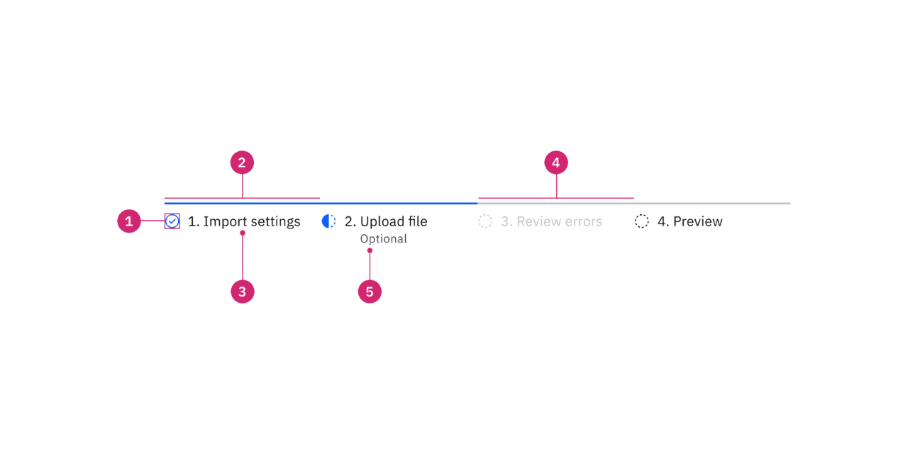
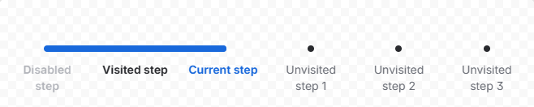
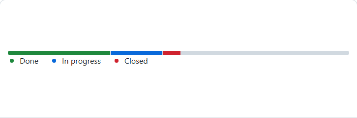

Giữ nguyên bố cục A đã chọn: thanh chặng, câu việc tiếp theo, khối Giao hàng, dải số, bảng kho. Chỉ làm lại phần trong khung đỏ cho hiện đại hơn. Bảng kho bên dưới để nguyên, chỉ đặt vào cho đủ bối cảnh. Dữ liệu theo DH002, số tồn kho là giả định.

IBM Carbon, Progress indicator. Mỗi bước gồm một vạch mảnh phía trên, biểu tượng trạng thái (dấu tích, nửa vòng, vòng nét đứt) và tên bước, không đóng hộp. Dùng cho phương án 1.

Atlassian, Progress tracker. Một trục ngang liền, phần đã đi tô màu, bước hiện tại đổi màu chữ, bước chưa tới chỉ là chấm. Dùng cho phương án 2.

GitHub Primer, ProgressBar nhiều khúc. Thanh mảnh chia khúc, chú thích nằm ngay dưới thanh và chỉ liệt kê các khúc đang có. Dùng cho dải số của phương án 3.
Bỏ năm hộp tô nền. Mỗi chặng chỉ còn một vạch mảnh phía trên: xanh là đã xong, cam là đang ở chặng này, xám là chưa tới. Chặng đang xem thì tên được gạch chân. Câu việc tiếp theo nằm trên nền nhạt, đầu câu có chấm cam. Bốn con số nằm trong một thẻ chia bốn ô, ô "Giao được ngay" được nhấn màu.
| Kho | Đang có | Đã giữ cho yêu cầu giao | Giao được | Của ai |
|---|---|---|---|---|
| Kho thành phẩm | 300 | 0 | — | hàng của DH001 |
| Kho Bình Dương | 120 | 0 | — | tồn chung, không thuộc đơn nào |
Năm chặng nằm trên một trục ngang. Đoạn đã đi tô xanh, đoạn đang chạy tô cam, chặng đang chạy có vòng sáng quanh chấm. Câu việc tiếp theo và hạn giao gộp vào một thẻ tóm tắt: trái là đơn đang ở đâu, phải là hạn giao lớn kèm số ngày còn lại. Vì vậy dòng "Hạn giao cam kết" và thẻ "còn 27 ngày" không còn phải nói hai lần. Bốn con số là bốn ô nền nhạt, ô giao được có viền cam.
| Kho | Đang có | Đã giữ cho yêu cầu giao | Giao được | Của ai |
|---|---|---|---|---|
| Kho thành phẩm | 300 | 0 | — | hàng của DH001 |
| Kho Bình Dương | 120 | 0 | — | tồn chung, không thuộc đơn nào |
Thanh chặng là một dải nền xám chứa năm nút. Chặng đang xem nổi lên thành thẻ trắng, mỗi chặng có số thứ tự hoặc dấu tích. Câu việc tiếp theo thành một dòng chữ thường. Bốn ô số được thay bằng con số chính "giao được" ở bên phải, cộng một thanh mảnh nhiều khúc. Chú thích dưới thanh luôn kèm số, khúc nào bằng 0 thì chữ nhạt đi. Như vậy không còn chuyện chú thích năm màu mà thanh chỉ có một màu.
| Kho | Đang có | Đã giữ cho yêu cầu giao | Giao được | Của ai |
|---|---|---|---|---|
| Kho thành phẩm | 300 | 0 | — | hàng của DH001 |
| Kho Bình Dương | 120 | 0 | — | tồn chung, không thuộc đơn nào |